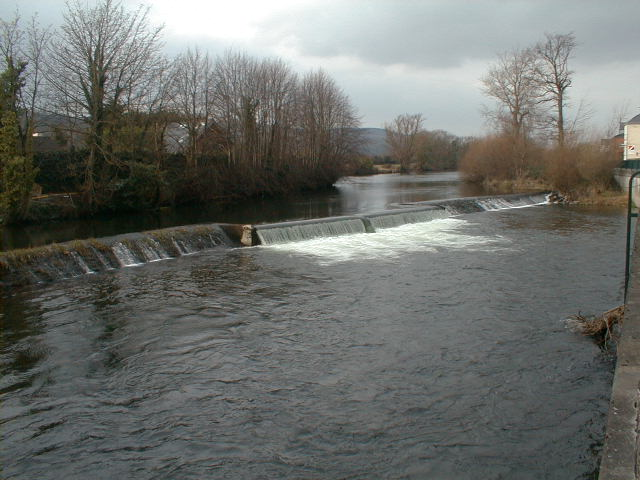

The Quay - Le Hais na Siuire
The Suir has played an important role in Clonmels History - as a meams of access, defence, commerce, recreation and power for the mills. The Medieval quays stretched the length of the river bank beyond the south walls of the town. Shortly after 1765 these walls were leveled to allow the quays to be extended.
Between 1775 and 1840, economic development, an agricultural boom and use of the river for cheap transport helped make Clonmel one of the most important commercial and industrial inland towns in Ireland.
Initially agriculture gave the boost, with most of the grain in Tipperary and a large amount from Munster passing through the town. The barges were a cheap way of transporting heavy bulk grain efficiently and relatively quickly.
The formation of the River Suir Navigation Company between 1836 and 1841, and the deepening of the river between Clonmel and Carrick-On-Suir meant that vessels of up to 200 tons could dock in Clonmel. In 1920, after a long struggle with rail transport, the barges ceased to sail and the towpaths became walkways for the public. During the town drainage scheme in 1992 the quays were rebuilt and the original towpaths lost. However the bollards for tying the barges remain to be seen along the quay walkway.
